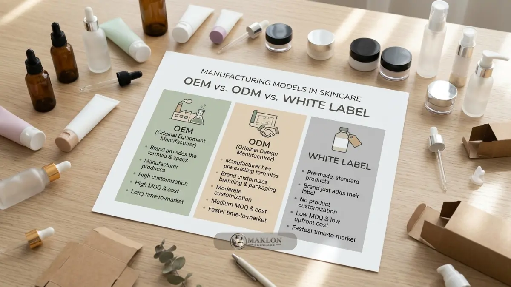

Keunggulan maklon skincare OEM meliputi investasi lebih ringan, formula yang dapat disesuaikan, produksi berstandar pabrik, dan waktu peluncuran lebih cepat dibanding membangun pabrik sendiri.
- OEM unggul dalam diferensiasi formula dan kepemilikan konsep produk.
- ODM unggul dalam kecepatan dan biaya awal yang lebih rendah.
- White label cepat tetapi diferensiasi paling rendah, sedangkan produksi sendiri memberi kendali penuh dengan investasi terbesar.
- Pilihan terbaik bergantung pada anggaran, target waktu, dan kesiapan tim brand.
Apa Saja Keunggulan Utama Maklon Skincare OEM?
Keunggulan utama maklon skincare OEM adalah efisiensi modal, akses ke fasilitas dan tenaga formulasi berpengalaman, kendali atas spesifikasi produk, serta fokus pemilik brand pada pemasaran.
- Efisiensi modal: Brand tidak perlu membeli mesin manufaktur, menyewa gedung produksi industri, atau membangun laboratorium steril sendiri.
- Keahlian formulasi: Formulator pabrik membantu menerjemahkan konsep kreatif menjadi formula sediaan yang stabil dan layak diproduksi secara massal.
- Kendali spesifikasi: Pada skema OEM, brand menentukan bahan aktif hero, tekstur sediaan, aroma, dan klaim, sehingga produk memiliki pembeda nyata.
- Standar produksi: Pabrik berizin menerapkan prosedur produksi dan pemeriksaan mutu yang konsisten sesuai standar CPKB resmi.
- Fokus bisnis: Waktu pemilik brand dialihkan seutuhnya ke penguatan branding, perluasan distribusi penjualan, dan layanan pelanggan.
- Skalabilitas: Volume produksi dapat dinaikkan bertahap seiring dengan tren pertumbuhan angka penjualan brand Anda di pasar.
Mengapa Skema Maklon Relevan bagi Brand Skala Kecil dan Menengah?
Skema maklon relevan bagi brand skala kecil dan menengah karena pemilik brand dapat memulai tanpa membeli mesin, membangun laboratorium, atau merekrut tim produksi sendiri.
Data BPOM yang disampaikan Kemenperin dan Perkosmi pada Mei 2026 menyebut sekitar 90 persen industri kosmetik dalam negeri merupakan industri kecil dan menengah.
Pelaku usaha berskala kecil umumnya memiliki modal dan tim operasional terbatas, sehingga model produksi kontrak membantu mereka bersaing setara tanpa beban investasi aset tetap yang besar.
Dengan skema maklon skincare OEM, risiko investasi dapat dibatasi secara ketat pada jumlah pesanan produksi.
Jika produk belum laku sesuai harapan, brand tidak menanggung beban operasional mesin pabrik dan fasilitas laboratorium yang menganggur.
Bagaimana Perbandingan Skema OEM, ODM, White Label, dan Produksi Sendiri?
Skema OEM menawarkan formula khusus, ODM formula siap pakai, white label produk jadi bermerek ulang, dan produksi sendiri kendali penuh dengan investasi terbesar.
| Aspek Pembanding | OEM | ODM | White Label | Produksi Sendiri |
|---|---|---|---|---|
| Sumber Formula | Sesuai brief brand | Katalog pabrik | Produk jadi pabrik | Tim internal |
| Diferensiasi | Tinggi | Sedang | Rendah | Sangat tinggi |
| Kecepatan | Sedang | Cepat | Paling cepat | Lambat |
| Modal Awal | Moderat | Rendah | Paling rendah | Tinggi |
| Kendali Produksi | Tinggi | Sedang | Rendah | Penuh |
| Risiko Pengembangan | Sedang | Rendah | Sangat rendah | Tinggi |
Tidak ada skema yang selalu terbaik dalam setiap kondisi bisnis. Setiap pilihan menukar kecepatan, anggaran biaya, dan kendali dengan pertimbangan yang berbeda.

Apa Keunggulan OEM Dibanding ODM dan Sebaliknya?
OEM unggul dalam diferensiasi formula dan kepemilikan konsep produk, sedangkan ODM unggul dalam kecepatan peluncuran, biaya awal lebih rendah, dan risiko pengembangan formula lebih kecil.
Dengan skema OEM, brand dapat membangun identitas khas lewat formula eksklusif yang tidak dimiliki kompetitor lain, misalnya perpaduan bahan aktif spesifik untuk skin barrier tropis.
Kepemilikan konsep juga jauh lebih kuat, asalkan perjanjian kontrak tertulis sejak awal menegaskan hak eksklusivitas atas formula sediaan tersebut.
Sementara dengan skema maklon skincare ODM, brand memanfaatkan formula yang telah teruji stabilitasnya oleh pabrik, sehingga siklus riset dan pengujian sampel jauh lebih pendek.
Kelemahannya, pihak pabrik dapat menawarkan basis formula serupa kepada brand lainnya di pasaran. Karena itu, banyak brand baru memulai dari ODM untuk menguji pasar, lalu secara bertahap beralih ke OEM untuk produk andalan mereka.
Kapan Skema OEM Paling Cocok Digunakan?
Skema OEM paling cocok bagi brand yang memiliki konsep produk jelas, ingin formula eksklusif, dan siap menanggung biaya pengembangan serta MOQ lebih besar.
OEM sangat ideal ketika brand memiliki proposisi nilai pembeda yang sangat bergantung pada keunikan formula, misalnya fokus mendalam pada satu konsentrasi bahan aktif atau kebutuhan dermatologis tertentu.
Skema ini juga masuk akal secara finansial bila pemilik brand telah menyiapkan anggaran litbang, target waktu peluncuran yang tidak terlalu mendesak, dan rencana pemasaran digital yang solid untuk menyerap volume stok perdana.
Sebaliknya, jika Anda baru sekadar menguji minat pasar, memiliki anggaran awal yang terbatas, atau dituntut meluncur dalam kurun waktu singkat, skema ODM atau formula katalog siap pakai dengan kustomisasi ringan merupakan pilihan yang jauh lebih aman.
Apa Batasan yang Perlu Diwaspadai dari Maklon?
Batasan maklon skincare mencakup ketergantungan pada satu pabrik, jadwal produksi mengikuti antrean, MOQ tertentu, dan risiko kebocoran formula jika perjanjian kerahasiaan tidak dibuat.
Ketergantungan pada satu fasilitas pabrik berisiko bila terjadi kendala teknis atau antrean perizinan. Brand dapat memitigasi risiko dengan menyimpan dokumentasi spesifikasi teknis formula secara rapi dan menyiapkan alternatif cadangan bila memungkinkan.
Jadwal produksi massal selalu mengikuti kapasitas antrean pabrik, sehingga siklus pemesanan ulang (repeat order) harus direncanakan beberapa bulan sebelum persediaan di gudang menipis.
Pastikan dokumen kontrak kerja sama mengatur klausul kerahasiaan (NDA), kepemilikan formula, standar toleransi reject, dan mekanisme kompensasi cacat produk secara transparan. Rincian biaya dapat dipelajari di artikel biaya maklon skincare OEM dan perhitungan margin.
Bagaimana Memilih Skema yang Tepat?
Pilihan skema yang tepat bergantung pada anggaran, kebutuhan diferensiasi, target waktu peluncuran, dan kesiapan tim brand dalam mengelola formulasi, legalitas, serta pemasaran.
- Anggaran terbatas dan ingin cepat: pilih skema ODM atau formula siap pakai pabrik dengan penyesuaian kemasan dan aroma ringan.
- Konsep unik dan siap investasi: pilih skema OEM dengan brief formula detail untuk membangun aset formula eksklusif brand.
- Sudah punya tim teknis dan volume besar: pertimbangkan investasi fasilitas produksi sendiri secara bertahap setelah penjualan stabil.
Langkah lengkap memilih pabrik dan menyiapkan brand ada di panduan maklon skincare OEM terbaik. Contoh penerapan pada brand lokal dapat dilihat di studi kasus maklon skincare OEM.
Konsultasi Pemilihan Skema Maklon Skincare
Maklon skincare OEM menawarkan keseimbangan antara kendali formula dan efisiensi modal, sementara ODM dan white label lebih cepat, dan produksi sendiri paling mandiri tetapi paling mahal.
Tentukan prioritas brand Anda terlebih dahulu: kecepatan peluncuran, efisiensi biaya, atau kekuatan diferensiasi produk di pasar.
Bingung memilih skema yang paling tepat untuk brand Anda? Hubungi tim konsultan kami untuk konsultasi gratis dan rekomendasi skema OEM atau ODM melalui WhatsApp Maklon Skincare sekarang juga.